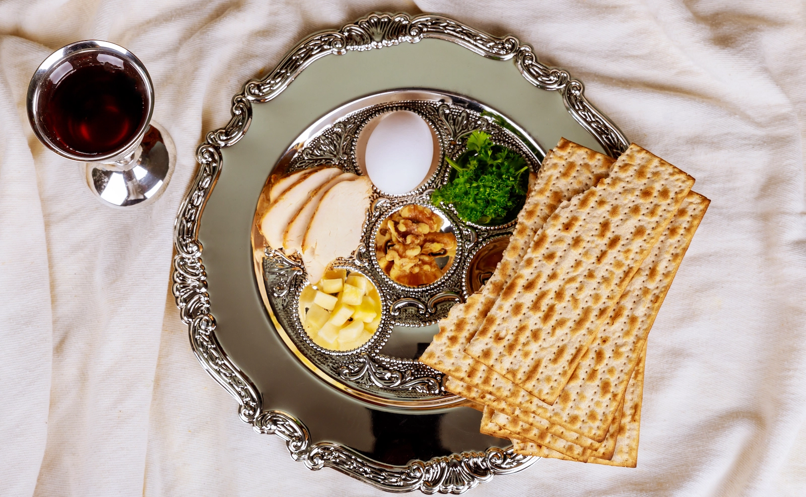

30 Mar de 2023

Celebração de Pêssach.
A festa de oito dias de Pêssach é celebrada no início da primavera, de 15 a 22 do mês hebraico de Nissan. Pêssach comemora a emancipação dos judeus da ...
ver mais
ver mais